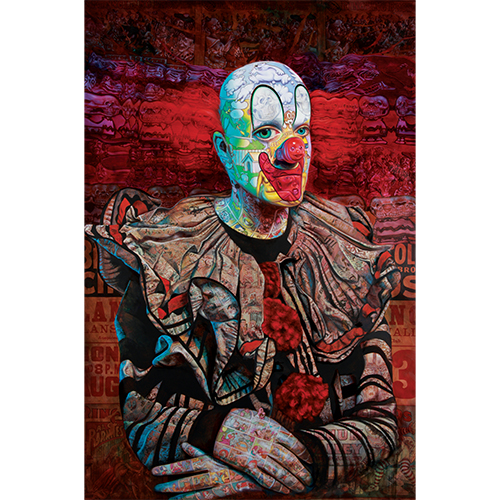

Exhibitions
Skin Deep: Post-Instinctual Afterthoughts on Psychological Portraiture, Lazarides (Rathbone Place), London, United Kingdom, June 24–July 21, 2011.
Literature
Ron English, Fauxlosophy: The Art of Ron English (San Francisco: Last Gasp, 2008), p. 12. ISBN 978-0867196566.
Ron English, Death and the Eternal Forever (Korero Press, 2014), p. 114. ISBN 978-0957664920.
Ron English, Original Grin: The Art of Ron English (Paris: Cernunnos, 2019), p. 109. ISBN 978-2374950938.
Ron English, Status Factory: The Art of Ron English (San Francisco: Last Gasp of San Francisco, 2014), p. 181. ISBN 978-0867197891.
Notes
In The Original Grin, Death and the Eternal Forever, and Status Factory, this work was erroneously reported as 60x80 inches.